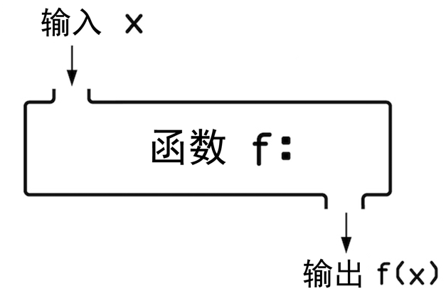

让计算机执行的指令。
让计算机执行的命令。
与高级语言相比，更接近二进制的语言。
读起来像英语的易于理解的语言。
难于阅读和理解的编程语言。
（这个我就不废话了，
菜鸟教程：https://www.runoob.com/python/python-tutorial.html）
接受输入，并执行输出结果语句。

被普遍认可的方式。
使程序输入的参数正常输出。
传递给函数的数据。
非可选参数。
1 #x为必选参数
2 def asd_ww(x,y=1):
3 return x-y
4
5 v=asd_ww(3)
6 print(v)
7
8 >>12非必须提供的参数。
1 #y为可选参数
2 def asd_ww(x,y=1):
3 return x-y
4
5 v=asd_ww(3)
6 print(v)
7
8 >>12
Python自带的函数。
例如：
1 #查看当前python解释器的内置函数
2 import keyword
3
4 print(keyword.kwlist)
5
6 >>['False', 'None', 'True', 'and', 'as', 'assert', 'async', 'await', 'break', 'class', 'continue', 'def', 'del', 'elif', 'else', 'except', 'finally', 'for', 'from', 'global', 'if', 'import', 'in', 'is', 'lambda', 'nonlocal', 'not', 'or', 'pass', 'raise', 'return', 'try', 'while', 'with', 'yield']
变量可以进行的读写范围。
变量可在全程序进行读写。
拥有全局作用的变量。
例如：
1 x=1
2 y=2
3
4 print(x)
5
6 >>1
只能在其定义所在的函数（或类）中读写的变量作用域。
例如:
1 def f();
2 a=1 #定义函数内的局部变量，只能在函数内调用
3 b=2
4
5 print（a） #尝试在函数外调用
6
7 >>NameError: name 'a' is not defined
检测错误条件，如果符合定义的条件，捕获异常，并决定如何处理。
例如：
1 a=3
2 b=0
3 # print(a/b) #如果直接运行此行就会发生‘ZeroDivisionError’错误
4 try:
5 print(a/b)
6 except ZeroDivisionError: #列出可能发生的错误
7 print("输入有误！")
8
9 >>输入有误！
解释函数功能，记录其参数类型的字符串。
例如：
1 def f(x,y):
2 """
3 返回x+y的值
4 :param x:int
5 :param y:int
6 :return:int,x与y之积
7 """
8 return x*y
与指定数据类型紧密相关的函数。
指对象可以使用循环被访问自身的没一个元素。
例如;
1 a="ajshfdsh"
2 i=0
3 for i in a:
4 print(i)
5
6 >>
7 a
8 j
9 s
10 h
11 f
12 d
13 s
14 h
可迭代的对象，如字符串，列表和元素。
代表元素在可迭代对象中的位置。
例如：
1 a=['a','b','c']
2 s=a.index('b')
3 print(s)
4
5 >>1
容器中的内容可以发生变化。如列表(list)，字典（dic）
容器中的内容不能发生变化。如元组（tuple）
一种储存对象的内置容器，拥有对应的‘键’和“值”。
例如：
1 a={'name':'xiaoming','age':18}
用来查找字典中对应的值。
例如：
1 a={'name':'xiaoming','age':18}
2
3 print('name')
4
5 >>xiaoming
字典中映射键的值。
将一个对象连接至另一个对象。
字典中映射至值。
从右往左查找可迭代对象中的元素（正常顺序是从左往右）。
例如：
1 a=['a','b','c']
2 s=a[-1]
3 print(s)
在python具有特殊意义的字符，告诉程序不执行。如：“ ”，#
将一个可迭代对象的子集，创建为一个新的可迭代对象。
例如：
1 a=['a','b','c']
2
3 print(a[0:2])
4
5 >>['a', 'b']
开始切片的索引。
结束切片的索引。
在代码未满足定义条件时，持续执行一段代码。
例如：
1 #死循环
2 while True:
3 print('hello world')
使用循环迭代对象中的每个元素。
迭代对象的一中循环。
例如：
1 a="123"
2 i=0
3 for i in a:
4 print(i)
5
6 >>1
7 2
8 3
变量的值为可迭代对象元素的位置。
只要表达式结果为True就会一直执行下去的循环。
例如：
1 while True：
2 print（‘123’）
3
4 >>123
5 123
6 123
7 123
8 ...
永远不会终止的循环。
用来终止循环。
例如：
1 while True:
2 print("123")
3 break
4
5 >>123
内部包含嵌套循环的循环。
例如：
1 a=[1,2,3]
2 b=[4,5,6]
3 c=[]
4 for i in a: #外循环
5 for j in b: #内循环
6 c.append(i+j)
7
8 print(c)
9
10 >>[5, 6, 7, 6, 7, 8, 7, 8, 9]
嵌套在另一个循环中的循环。
含有代码的python文件别称。
python内置的模块。
导入模块。如：import keyword
访问文件中的数据。
添加或修改文件中的数据。
一种复合语句，在执行完一行语句时，自动执行下一行语句的行为。
例如：
1 with open（“a.text”,"w"）as f:
2 f.write("hello world")后缀为.CSV的文件，常用作管理报表程序（如：Excel）。
如有不足，欢迎指正！